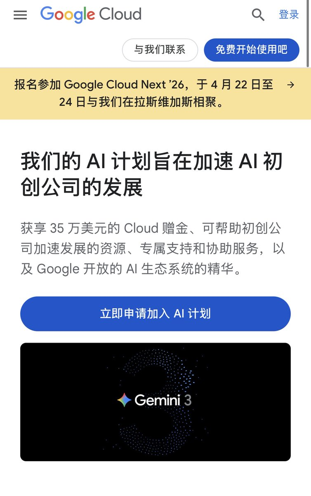

奶昔🥤
@realNyarime
这个教程不错，有需要Google AI的创业朋友可以试试，包括国内公司也可以申请
国内也有「亚马逊云科技」第一年免费，第二年半价，第三年75折的政策，每个公司都可以整一次，态度非常好
之前也有以公司名义申请Cloufflare的25k赠金，不过有效期只有1年。在此期间除了给域名升CF Business切部分DNS（CNAME接入）还体验了不少功能，在到期前降级了

Will Yang
@Will_Yang_
很多人问怎么申请，我贴一个极简教程，没有获得VC投资的主体也可以：
1️⃣先建 Google Cloud 账号
打开 https://t.co/2MUCgUQDbo
用公司邮箱登录 → 新建一个项目 → 创建 Billing Account（免费，几分钟搞定）。
2️⃣准备好这几样
公司官网（必须公开能访问）
VC 投资证明（Term Sheet https://t.co/Z30aSb58Pn https://t.co/kQj4HYJ4Mr